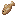
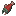
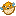
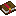
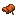
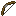
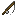

Fishing - Loot Table
Navigates to nearby water and catches fish and loot using Minecraft's built-in fishing loot table. There is a 5% chance per cycle to roll from the treasure table instead of the regular fishing table. Fishing does not use Cobblebase's Common/Uncommon/Rare/Ultra Rare tier system.
Properties
| Property | Value |
|---|---|
| Base Cooldown | 300 seconds (5 min) |
| Search Radius | 10 blocks |
| Requires | Water nearby |
| Treasure Chance | 5% per roll |
Proficiency Drop Chances
The tier rolled each cycle depends on your Pokemon's proficiency level. Higher proficiency shifts the odds toward rarer tiers.
Fishing uses Minecraft's vanilla fishing loot tables. Proficiency affects cooldown speed only, not loot quality. There is a flat 5% chance per cycle to roll from the treasure table.
Loot Tables
Each tier has its own pool of items. When a tier is rolled, one entry is chosen from that pool based on weight. The Drop Chance column shows the probability of getting that specific item within the tier.
Fishing uses Minecraft's built-in minecraft:gameplay/fishing loot table (95% of rolls) and minecraft:gameplay/fishing/treasure (5% of rolls). The exact items depend on your Minecraft version and any datapacks modifying those tables.
Typical Fishing Loot
| Category | Items | Notes |
|---|---|---|
| Fish (common) |  Cod, Salmon, Pufferfish | 95% of the time |
| Treasure (rare) |  Enchanted Books, Saddles, Bows, Fishing Rods | 5% treasure roll |
| Junk | Leather Boots, | Mixed into regular pool |
Want to know which Pokémon can learn this skill? Check our Species Database — filter by skill to see all compatible species.